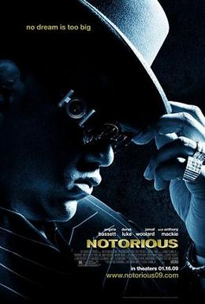
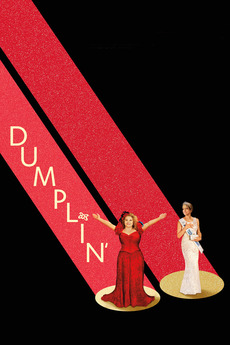
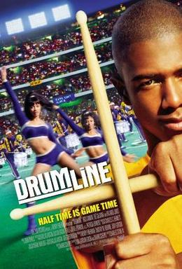

Ray (2004)
Overview
Ray Charles' soulful genius battles personal demons. Foxx's Oscar-worthy turn shines, but a long runtime and melodramatic flourishes hit a few flat notes.
Celebrating the rhythm of life through music biopics, hip-hop culture, musical comedies, and electrifying dance performances that move both body and soul.
Chronicles of real-life music legends and their enduring legacies.
Ray Charles' soulful genius battles personal demons. Foxx's Oscar-worthy turn shines, but a long runtime and melodramatic flourishes hit a few flat notes.

Freddie Mercury's rockstar saga powers Queen's rise. Malek's magnetic performance soars, but predictable biopic beats and historical tweaks soften the riff.

James Brown's funky journey from poverty to stardom grooves. Boseman's electric energy pops, but uneven pacing and rushed history miss some soul.

Ritchie Valens' brief, vibrant career rocks with heart. Infectious music and Morales' charm deliver, but formulaic storytelling mutes the final chord.

Biggie Smalls' rap legacy gets a polished retelling. Strong casting vibes, but a glossy script and lack of depth keep it from true greatness.
Stories of rap's raw energy and profound cultural impact.

N.W.A.'s revolutionary rise shakes the music world. Gritty performances hit hard, but selective history and a bloated runtime soften its edge.

Eminem's gritty rap battle tale channels raw ambition. His intensity and iconic tracks resonate, but familiar underdog tropes dull the mic drop.

50 Cent's street-to-stage story packs raw grit. Authentic vibes connect, but clichéd plots and uneven acting fumble its gangster swagger.
Lighthearted tales where music sparks laughter, joy, and transformation.

A rocker turns kids into a rock band with chaotic charm. Black's infectious energy jams, but some find its goofy formula a bit too juvenile.

A singer hides as a nun, transforming a choir. Goldberg's vibrant humor uplifts, but dated jokes and a thin plot keep it grounded.

Goldberg's nun revives a school choir with gospel flair. Lively performances shine, but a recycled plot and weaker gags dim the encore.

A teen embraces her identity through Dolly Parton's tunes. Warm-hearted charm resonates, but predictable tropes and uneven pacing soften its spark.
Intense stories driven by the passion of music and the power of movement.

A drummer's relentless pursuit meets a ferocious mentor. Simmons and Teller's electric clash dazzles, though its intensity overwhelms some viewers.

Barnum's circus spectacle bursts with song and dance. Catchy tunes and Jackman's charm soar, but shallow history and glossiness irk critics.

A brash drummer finds discipline in a college band. High-energy performances thump, but clichéd drama and predictable arcs march to a routine beat.

A street dancer transforms a college step team. Dynamic routines electrify, but formulaic plots and stiff acting trip up the rhythm.

A Beijing dance crew chases glory in a Step Up sequel. Flashy moves entertain, but a weak story and flat characters stumble on the floor.
Spike Lee's musical satire confronts Chicago's violence. Bold music and style provoke, but messy tones and preachy vibes disrupt the flow.